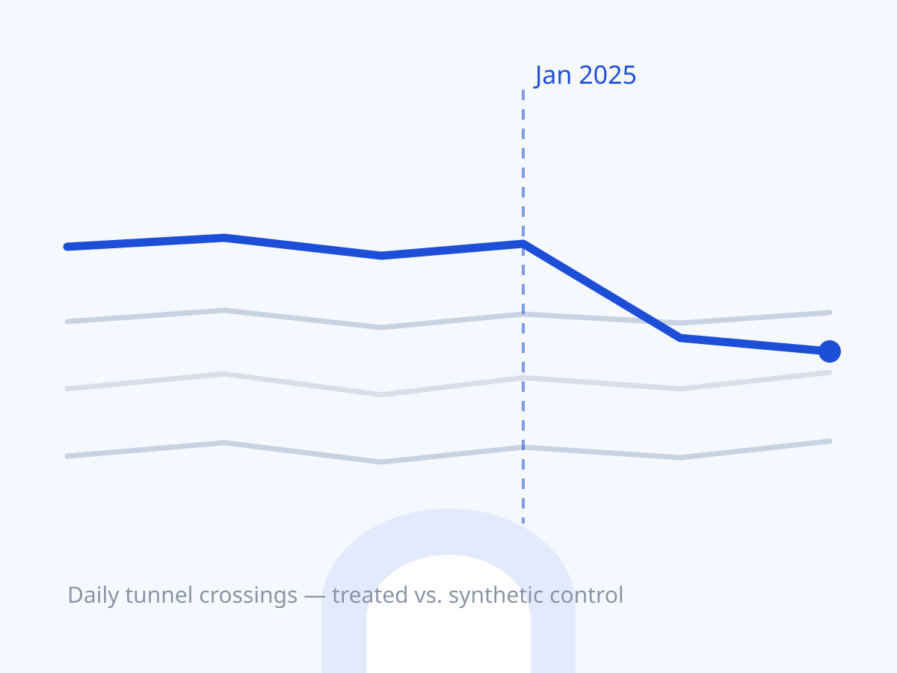

In January 2025, New York switched on congestion pricing for Manhattan below 60th Street. The obvious question — did tolled crossings actually carry less traffic? — is a causal question, and a hard one: the treated crossings are a handful of tunnels, there is no untreated Manhattan, and traffic was still normalizing post-pandemic.
I built a daily panel of crossings from Port Authority data (with a monthly MTA + Port Authority panel alongside it) and estimated the effect with ridge-augmented synthetic control, checking the result with in-space placebos (pretending each donor crossing was treated) and an in-time placebo (pretending pricing started a year early). The daily and monthly panels do not always agree, and the synthetic-control weights are concentrated enough that the answer is sensitive to which donors you trust — so the current stage of the project is diagnostics: identifying which donors drive the fit, and whether the placebo distribution really separates the treated unit from noise.
The point of the project is the discipline, not a headline number: pre-registering the donor pool, reporting the estimates that don’t flatter the hypothesis, and saying plainly what the design can’t identify — including the crossings for which no public data exists.